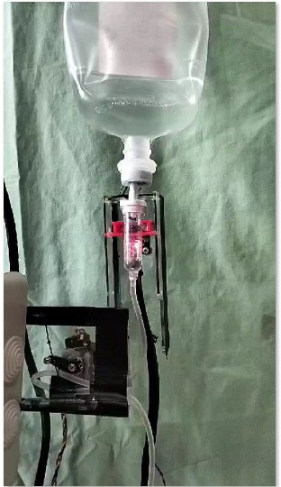

Internet of Things · 2025
Sistem monitoring sisa cairan infus secara real-time menggunakan sensor berat (Load Cell + HX711) yang diproses oleh ESP32 dan dikirim ke Node-RED untuk ditampilkan pada dashboard website. Sistem juga memberi notifikasi otomatis saat cairan hampir habis.

OVERVIEW
Membantu tenaga medis memantau sisa cairan infus pasien secara real-time tanpa harus mengecek manual ke ruangan, sehingga mengurangi risiko keterlambatan penggantian infus.
Hardware & Software Developer — merancang rangkaian sensor, memprogram ESP32, membuat alur Node-RED, dan membangun dashboard monitoring berbasis web.
± 4 bulan (Februari – Juni 2025), dikerjakan sebagai Tugas Akhir Diploma III Teknologi Komputer.
Selesai — prototipe berhasil diuji dan dipresentasikan pada sidang Tugas Akhir.
FITUR
Sensor Load Cell membaca berat cairan infus secara terus-menerus dan mengirim data ke ESP32.
ESP32 mengirim data ke broker MQTT untuk diteruskan ke Node-RED secara efisien dan ringan.
Data ditampilkan pada dashboard web berisi grafik sisa cairan, status infus, dan riwayat.
Buzzer dan alert di dashboard aktif saat sisa cairan mencapai ambang batas minimum.
Setiap pembacaan sensor disimpan ke database MySQL untuk keperluan analisis dan audit.
Fitur kalibrasi Load Cell melalui HX711 agar pembacaan berat akurat.
ARSITEKTUR
Load Cell mengukur berat kantong infus → sinyal analog diperkuat HX711 → dikonversi ke digital.
ESP32 membaca data HX711, menghitung sisa cairan (gram → mL), lalu mengirim via MQTT.
Node-RED menerima data MQTT, memproses logika notifikasi, dan menyimpan ke MySQL.
Dashboard PHP + Chart.js menampilkan data real-time, grafik historis, dan status perangkat.
TEKNOLOGI
Mikrokontroler
Sensor berat
Protokol komunikasi
Flow processing
Backend dashboard
Database
PROSES
Solusi: Menerapkan filter moving average pada ESP32 dan kalibrasi ulang HX711 untuk memperhalus nilai berat.
Solusi: Menambahkan mekanisme auto-reconnect dan buffer data lokal agar data tidak hilang saat koneksi pulih.
Solusi: Mengatur threshold berbasis persentase (bukan gram mentah) dan memakai interval publish MQTT yang lebih cepat.
Silakan hubungi saya untuk diskusi atau kolaborasi.